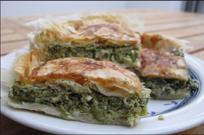

Pite Me Spinaq
INGREDIENTS FOR PETE
- 1kg flour
- 500ml water
- 200gr oil
- 1 spoon salt
INGREDIENTS FOR THE FILLING
- 1kg spinach
- 100gr cheese
- 5 spoons yogurt
- 1 egg
- 2-4 new onions
- 1 spoon salt

INTRUCTIONS
- We add some salt water to the flour
- We divide the dough into 18 small pieces and leave them out covered for about 10 to 20 min.
- A t'hollues(albanian word for making petë)should be rolled over the dough ,and we line up them and form katmerin.
- We put spinach over katmerin and roll them over and put them together again.